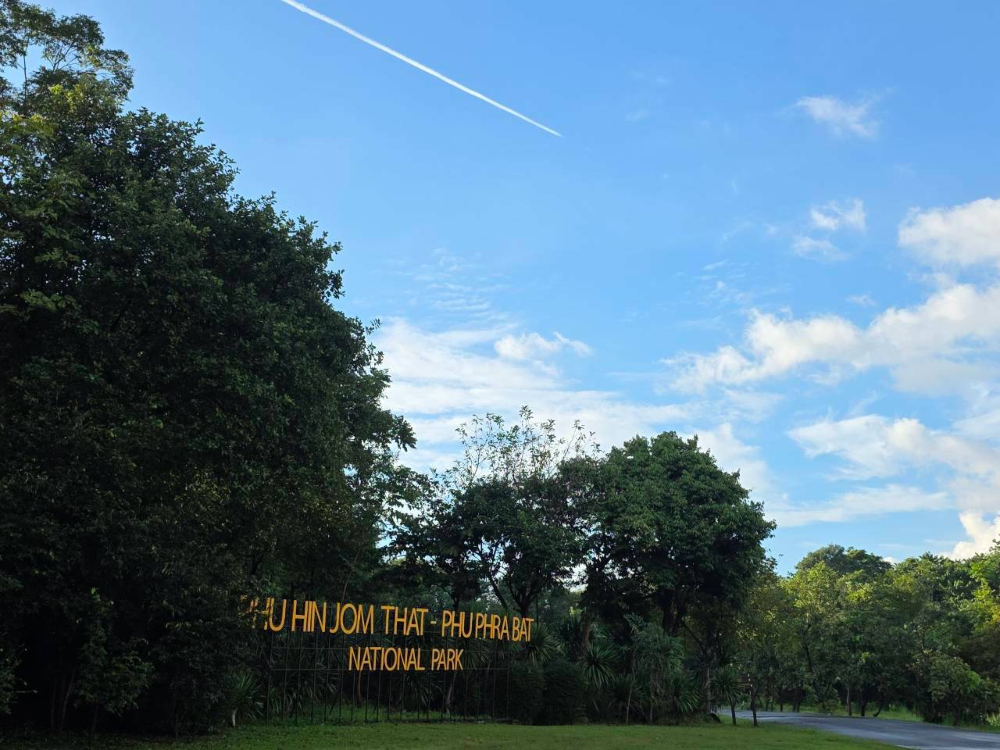
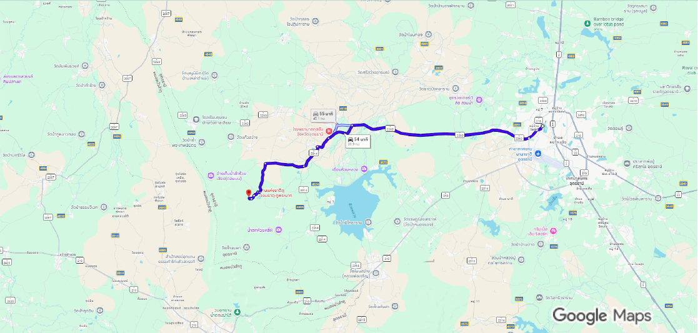

สังคมพืช 01
ป่าเบญจพรรณ (Mixed Deciduous)
พบตามที่ราบเชิงเขาและไหล่เขา มีไผ่กระจายตัวหนาแน่น พรรณไม้สำคัญ ได้แก่ มะค่าโมง แดง ประดู่ สัก ตะแบก ชิงชัน และพะยูง
ทำความรู้จักประวัติความเป็นมา ที่ตั้ง ภูมิประเทศ และชุมชนโดยรอบอุทยานแห่งชาติเตรียมการภูหินจอมธาตุ–ภูพระบาท ผ่านข้อมูลและเรื่องราวของพื้นที่

ภูมิทัศน์ของพื้นที่อุทยาน
01 / HISTORY
ประวัติความเป็นมาของผืนป่าแห่งนี้เริ่มต้นจากการเป็นพื้นที่ป่าอนุรักษ์ที่มีความอุดมสมบูรณ์และมีความสำคัญในเชิงนิเวศและธรณีวิทยาอย่างสูง ต่อมาทางราชการได้เห็นสมควรในการยกระดับพื้นที่เพื่อการอนุรักษ์อย่างยั่งยืน จึงได้ริเริ่มโครงการจัดตั้งอุทยานแห่งชาติขึ้น อุทยานแห่งชาติภูหินจอมธาตุ - ภูพระบาท (เตรียมการ) โดยทำการหลอมรวมและผนวกพื้นที่ป่าอนุรักษ์เดิมที่เป็นวนอุทยานสำคัญ 3 แห่งในพื้นที่จังหวัดอุดรธานีเข้าด้วยกัน ได้แก่ วนอุทยานภูหินจอมธาตุ วนอุทยานภูผาแดง และ วนอุทยานพุทธบาทบัวบก ซึ่งการรวมป่าอนุรักษ์ทั้งสามแห่งนี้ช่วยให้ผืนป่าขนาดใหญ่เชื่อมต่อกันเป็นระบบนิเวศป่าที่สมบูรณ์ สามารถดูแลสัตว์ป่าและทรัพยากรธรรมชาติในภาพรวมได้อย่างมีประสิทธิภาพสูงสุด
ในช่วงแรกเริ่มของการบูรณาการผืนป่าทับซ้อนดังกล่าว ทางกรมอุทยานแห่งชาติ สัตว์ป่า และพันธุ์พืช ได้กำหนดให้ใช้ชื่อว่า อุทยานแห่งชาติภูผายา เพื่อเป็นชื่อเรียกอย่างเป็นทางการในขั้นตอนเตรียมการจัดตั้ง อย่างไรก็ตาม ต่อมาเพื่อให้ชื่อของอุทยานแห่งชาติสะท้อนถึงอัตลักษณ์ที่แท้จริง ความโดดเด่นทางธรรมชาติ และสอดคล้องกับแหล่งท่องเที่ยวแลนด์มาร์กสำคัญที่ผู้คนรู้จักกันเป็นอย่างดี จึงได้มีการพิจารณาเปลี่ยนชื่อไปเป็น อุทยานแห่งชาติภูหินจอมธาตุ - ภูพระบาท ในเวลาต่อมา โดยคำว่า "ภูหินจอมธาตุ" ตั้งตามกลุ่มหินทรายสูงใหญ่ที่มีรูปร่างแปลกตาคล้ายเจดีย์ในฝั่งอำเภอกุดจับ ขณะที่คำว่า "ภูพระบาท" ตั้งตามพื้นที่ทางประวัติศาสตร์และวัฒนธรรมอันเป็นที่ประดิษฐานรอยพระพุทธบาทโบราณตามแนวเทือกเขาภูพานน้อยในฝั่งอำเภอบ้านผือ
ปัจจุบันอุทยานแห่งชาติแห่งนี้ยังคงอยู่ในระหว่างขั้นตอนการเตรียมการประกาศจัดตั้งอย่างเป็นทางการ เนื่องจากแนวเขตพื้นที่บางส่วนยังไม่คงตัวและอยู่ในระหว่างกระบวนการรังวัด ปรับปรุง และพิจารณาปักปันแนวเขตร่วมกับชุมชนเพื่อไม่ให้กระทบต่อที่ดินทำกินของราษฎรโดยรอบ การหลอมรวมพื้นที่อนุรักษ์เดิมมาสู่การบริหารจัดการผืนป่าร่วมกันในปัจจุบัน ไม่เพียงแต่ทำให้ผืนป่าแห่งนี้เป็นแหล่งเรียนรู้ วิจัยทางธรรมชาติวิทยา และแหล่งต้นน้ำลำธารที่สำคัญของภูมิภาคเท่านั้น แต่ยังส่งเสริมการท่องเที่ยวเชิงนิเวศและการอนุรักษ์ความหลากหลายทางชีวภาพอย่างยั่งยืน

02 / LOCATION
อุทยานแห่งชาติภูหินจอมธาตุ–ภูพระบาท (เตรียมการ) ตั้งอยู่บนแนวเทือกเขาหินทราย ครอบคลุมพื้นที่รอยต่อ 3 จังหวัดในภาคตะวันออกเฉียงเหนือตอนบน ได้แก่ จังหวัดอุดรธานี จังหวัดหนองบัวลำภู และจังหวัดเลย โดยมีที่ทำการอุทยานฯ ตั้งอยู่ที่บ้านห้วยยางคำ ตำบลกุดจับ อำเภอกุดจับ จังหวัดอุดรธานี
พื้นที่อนุรักษ์แห่งนี้เป็นป่าต้นน้ำลำธารสำคัญของลุ่มน้ำห้วยหลวงและลุ่มน้ำโขง โอบล้อมด้วยภูมิทัศน์ป่าเต็งรัง ลานหินทรายกว้างใหญ่ หน้าผาสูงชัน และแหล่งโบราณคดีที่เชื่อมโยงวิถีชีวิต ชุมชนท้องถิ่น และธรรมชาติเข้าไว้ด้วยกัน
ข้อมูลแนวเขตอุทยานแห่งชาติภูหินจอมธาตุ–ภูพระบาท (เตรียมการ)
เปิดแผนที่ขนาดใหญ่03 / AREA & ADMINISTRATION
ปัจจุบันพื้นที่อุทยานแห่งชาติภูหินจอมธาตุ–ภูพระบาท อยู่ระหว่างกระบวนการเตรียมการจัดตั้ง โดยมีเนื้อที่ดำเนินการเบื้องต้นประมาณ 92,068 ไร่ (ประมาณ 147.3 ตารางกิโลเมตร) ซึ่งขนาดพื้นที่และแนวเขตที่แน่นอนอาจมีการปรับปรุงตามผลการสำรวจรังวัด การตรวจสอบการถือครองที่ดิน และการกันแนวเขตร่วมกับชุมชนท้องถิ่นต่อไป
PREPARATION AREA
ตัวเลขเบื้องต้นในกระบวนการจัดตั้ง (อาจมีการเปลี่ยนแปลงตามการสำรวจแนวเขตจริง)
RESPONSIBLE AGENCY
สังกัดกรมอุทยานแห่งชาติ สัตว์ป่า และพันธุ์พืช กระทรวงทรัพยากรธรรมชาติและสิ่งแวดล้อม มีหน้าที่รับผิดชอบในการคุ้มครอง ดูแลรักษา ฟื้นฟูทรัพยากรธรรมชาติ และพัฒนาเป็นแหล่งเรียนรู้ทางธรรมชาติสำหรับประชาชน
04 / GETTING HERE
การเดินทางมายังที่ทำการอุทยานแห่งชาติภูหินจอมธาตุ–ภูพระบาท สามารถเดินทางโดยรถยนต์ส่วนตัวได้อย่างสะดวก โดยใช้เส้นทางหลักจากตัวเมืองอุดรธานี มุ่งหน้าสู่อำเภอกุดจับ และเชื่อมต่อไปยังที่ทำการอุทยานฯ ที่บ้านห้วยยางคำ ตำบลกุดจับ

ข้อแนะนำ: เส้นทางบางช่วงและทางขึ้นสู่จุดชมวิวบนเขาอาจเป็นทางลาดชันหรือทางลูกรัง ควรขับขี่ด้วยความระมัดระวัง และตรวจสอบสภาพรถรวมถึงสภาพอากาศก่อนออกเดินทางทุกครั้ง
05 / GEOLOGY & SOIL
พื้นที่อุทยานแห่งชาติภูหินจอมธาตุ–ภูพระบาท (เตรียมการ) มีรากฐานทางธรณีวิทยาอยู่ใน “กลุ่มหินโคราช” (Khorat Group) ซึ่งเป็นหินตะกอนที่ทับถมกันบนแผ่นดินมาอย่างยาวนานตั้งแต่ยุคไทรแอสซิก จูแรสซิก จนถึงครีเทเชียส วางตัวรองรับอยู่เหนือชั้นหินฐานโบราณ ก่อกำเนิดเป็นแนวเทือกเขาหินทราย ลานหิน และหน้าผาสูงชันอันเป็นเอกลักษณ์ของขอบที่ราบสูงโคราช
แบ่งออกเป็น 9 หมวดหินตามลำดับอายุ ได้แก่ หมวดหินห้วยหินลาด, น้ำพอง, ภูกระดึง, พระวิหาร, เสาขัว, ภูพาน, โคกกรวด, มหาสารคาม และภูทอก ผ่านการกัดกร่อนจากลมและน้ำจนเกิดเป็นประติมากรรมหินทรายและเพิงผาธรรมชาติ
สำหรับสภาพดิน ส่วนใหญ่เป็นกลุ่มชุดดินในพื้นที่ดอน เช่น ชุดดินโคราช ชุดดินท่ายาง ชุดดินน้ำพอง รวมถึงพื้นที่ลาดชันเชิงซ้อน และมีดินพื้นที่ลุ่มอย่างชุดดินร้อยเอ็ดและชุดดินราชบุรีตามแนวหุบเขาและแหล่งน้ำ
06 / FLORA & FORESTRY
จากการสำรวจเบื้องต้นตามลักษณะภูมิอากาศ ความสูงต่ำของภูมิประเทศ ดิน และสภาพแวดล้อม สามารถจำแนกสังคมพืชเด่นในพื้นที่อุทยานแห่งชาติภูหินจอมธาตุ–ภูพระบาท (เตรียมการ) ออกเป็น 3 ประเภทหลัก ได้แก่ ป่าเบญจพรรณ ป่าเต็งรัง และป่าดิบแล้ง
07 / FAUNA & WILDLIFE
จากการสำรวจความหลากหลายทางชีวภาพและข้อมูลภาคสนามรอบแนวเขตอุทยานแห่งชาติภูหินจอมธาตุ–ภูพระบาท (เตรียมการ) พบสัตว์ป่าอาศัยอยู่เป็นจำนวนมาก สะท้อนถึงความอุดมสมบูรณ์ของระบบนิเวศป่าไม้ โดยจำแนกออกเป็น 4 กลุ่มหลัก